Scripts and agent tasks: the step-by-step guide
How to make, change and fix scripts (presentations and sequences the assistant performs) and agent tasks (jobs the agent does when you ask in your own words), with what each step is for, how to set it up and when to use it, plus recipes for the harder cases. Both are made in Settings › Scripts & tasks in StudioGen; tasks that use web pages run on your Mac.
Script or task?
| Script | Agent task | |
|---|---|---|
| What it is | Something the assistant presents or performs over time: slides, lines it says, gestures, web pages, recorded clicks | A short job: open a page, click, type, read, and give you an answer card that's read aloud |
| Started by | Its name (present the keynote), the list, the start page, a show on several screens | What you say, in your own words (read the mail from Priya); the words in braces fill its inputs |
| Moves on | Step by step: the clicker, a phrase, a hand gesture, a pause, an app event | All at once, start to finish (or one step at a time while you test it) |
| Ends with | The last step (or “that's all” in an interactive script) | A result card on the Agent screen, spoken |
| Good for | Presentations, demos, kiosks, rehearsed flows, guided sessions | Mail, calendar, chats, web look-ups, anything you'd ask an assistant for |
The practice inbox
To try things safely, use the made-up mailbox at https://vchahalibm.github.io/CarPWA/labs/practice/inbox.html: a search box, a message list and a reading pane, built like Outlook on the web (the same kinds of labels and roles), with nothing behind it. The recipes below were run on it; the pictures are from those runs.
Make a script
- Settings › Scripts & tasks › Scripts › New script (or Record a new script, below).
- The editor opens. At the top: Run, Save and More… (check it for problems, edit it as JSON, export it with what it uses, read how scripts work). How a script runs explains it in one page.
- Before it starts sets the stage once: Stage mode, the layout, the deck, the web page. These are replayed quietly when you go back, so the screen is right at every step.
- Each step is a card with three lanes, in the order they happen:
- Show: what happens on screen (chips: tap one to change it, + Add for more);
- Say: the assistant's line (
{notes}reads the slide's speaker notes), its face and its motion; - Next: what moves it on.
- The buttons on a step: ▶ try just this step, ↑ ↓ move it, ⋯ more (save its id, duplicate, delete).
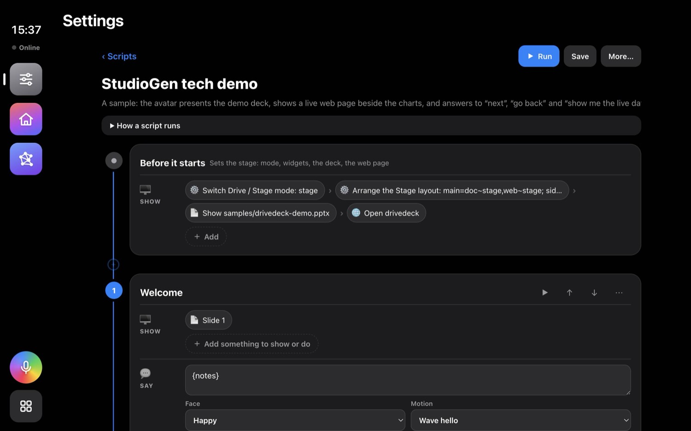
Add a step (the wizard)
Add a step (at the end, or ⊕ between steps) asks three questions:
- On screen: a slide, a web page, something done on screen (clicks and typing, added on the card next), or nothing new;
- The assistant says: a line or the slide's notes, with a face and a motion;
- Moving on: the clicker, a phrase, a gesture, after some seconds.
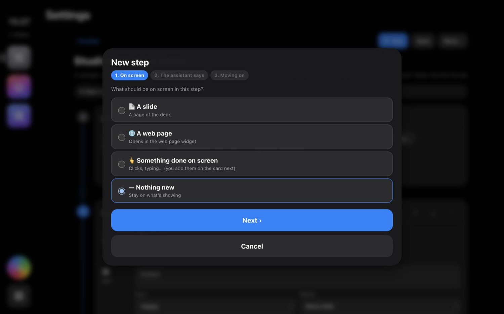
What a step can show or do
+ Add in a Show lane opens the picker. Each kind, what it's for and when to use it:
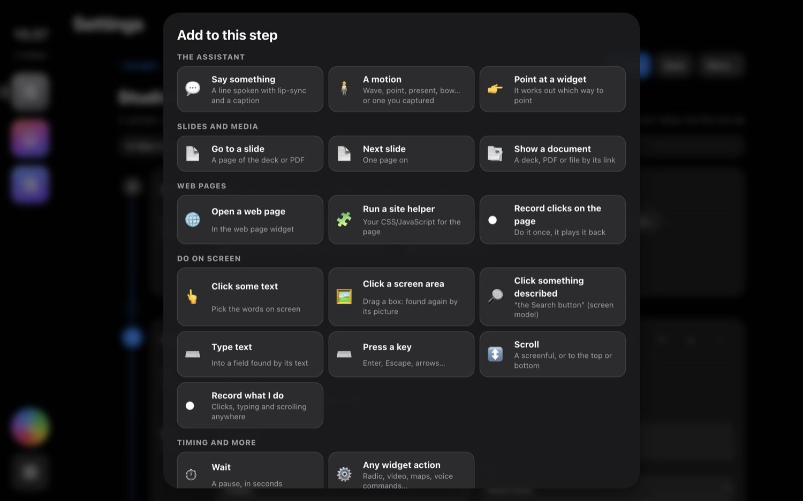
| Step | What it does | How | When to use it |
|---|---|---|---|
| Say something | A spoken line with lip-sync and a caption | Type the line; {notes}, {page} and your values like {name} are filled in | Narration between actions; reading a result (Revenue is {total}) |
| A motion | The assistant moves: wave, point, present, think, typing, bow…, or one you captured | Pick from the list | To draw eyes to something, greet, react |
| Point at a widget | Points at a widget (the deck, a web page) from wherever it stands | Pick the widget | “Look at this chart” |
| Go to a slide / Next slide | Turns the deck or PDF | A page number (prefer this: going back lands right) or one page on | Every presentation step |
| Show a document | Opens a deck, PDF or file by its link | Paste the link | Switching decks mid-show |
| Open a web page | Shows a page in the web widget | The address | Live demos, dashboards |
| Run a site helper | Your CSS/JavaScript on that page (hide banners, zoom) | Pick a helper (Settings › Scripts & tasks › Site helpers) | Tidying a site before the audience sees it |
| Record clicks on the page | Records clicks and typing on the web page, replays them with a visible pointer | Do it once; add as separate steps or one sequence | Demo flows on websites |
| Click some text | Clicks words on screen, anywhere in the app | Pick the words on screen | Buttons with stable labels |
| Click a screen area | Clicks a place found again by its picture | Drag a box around it | Unlabelled icons |
| Click something described | The screen model finds “the Search button” | Describe it (downloads Florence-2 once) | When the label changes but it looks the same |
| Type text / Press a key / Scroll | Typing into a field found by its text; Enter, Escape, arrows; a screenful or to the top/bottom | The field's label and the text; the key; how far | Forms, searches, long pages |
| Record what I do | Records clicks, typing, keys, scrolls and drags anywhere in the app | Do it, then Done | Complex app flows (resizing widgets, settings) |
| Wait | A pause | Seconds | Letting a page load or a point land |
| Any action | Everything else the app can do: radio, navigation, data, your Mac, agent tasks… | Pick from the action list | When there's no special card for it |
Moving on
The Next lane says what moves a step on; whichever comes first wins:
- The clicker or → (on by default) and a phrase (
next
, or your own words); - a hand gesture of the presenter (open palm, thumb up, swipe…; needs Follow the presenter);
- automatically, some seconds after the step is done;
- when something happens in the app (a video ends, a page changes, a route starts);
- a jump to another step instead of the next one.
Choices (+ in the Next lane › A choice) jump elsewhere on other phrases or gestures: show me the live data
→ the live-data step. While a script runs, go back
, back two steps
, start over
, repeat that
and stop the demo
always work, and the step dots on Stage list every step to jump to.
Record a new script
- Scripts › Record a new script.
- Use the app as you would in the demo: click widgets and buttons, type, press keys, scroll, drag, and click and type on web pages in web widgets. A recording bar stays on screen.
- Done. The recording becomes a script whose steps are your actions, with waits where you paused. Save it, or save and run it.
Interactive scripts
No timeline: the assistant greets you, listens, does what you ask from its list, and listens again until you say you're done. Scripts › New interactive script.
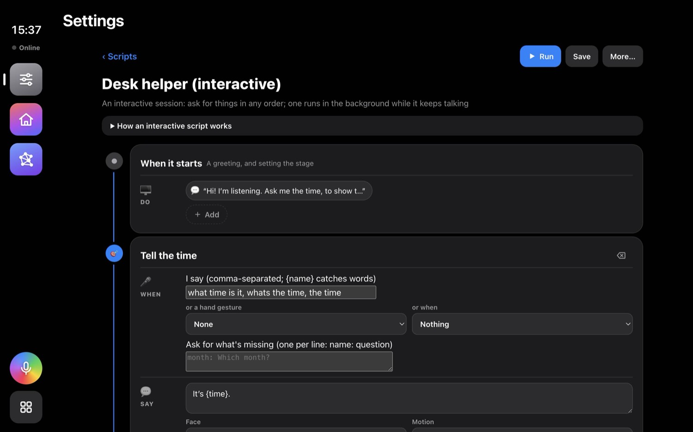
- Things it can do (intents): each has phrases (
show sales for {month}:{month}catches the words), an optional hand gesture or app event, a question for each missing word (Which month?
), what it says, and its steps. - When nothing matches: the fallback steps; with Understanding (Settings › Assistant) a language model picks the intent instead.
- Idle steps after some quiet, and end phrases (
that's all
).
Logic: values, if, loops, background jobs
Add these from + Add › Logic (Set a value, If…, Repeat, For each, Wait for a background step), or in More… › Edit as JSON. Any text in a step can use {name}; dots reach inside ({result.rows}, {card.items.0.title}); {time} and {date} are built in.
| Step | What it does | Example | When |
|---|---|---|---|
| Remember a value | Keeps a value (numbers stay numbers, JSON is parsed, {n} - 1 is worked out) | { "set": "n", "value": "3" } | Counters, gathering text |
| Keep what a step gives back | "as" on any action keeps its result; a failure goes into {name_error} | { "do": "brain.ask", "value": "…", "as": "answer" } | Using a result in the next steps |
| If | Runs then or else: == != > < is, contains, is empty, joined with and/or | { "if": "{n} > 3", "then": [ … ], "else": [ … ] } | Different paths |
| Repeat / until / for each | A number of times; until a condition; over a list ({index} counts, at most 1000) | { "each": "1, 2, 3", "as": "n", "steps": [ … ] } | Lists, retries, slideshows |
| Go to / stop | Jump to a step (also backwards); end the script | { "goto": "intro" } | Loops over steps |
| In the background | "background": true runs an action as a job while the script carries on; "then" when it's done; { "await": "name" } waits | An export while the assistant keeps talking | Long jobs |
Data, your Mac, and tasks from scripts
- Data: load a CSV/JSON (or a SQLite query on the Mac) into the data widget, change the chart, have the assistant say a summary. Actions Load a CSV…, Change the chart, Summarize the data.
- Your Mac: AppleScript, a Shortcut, JavaScript for Automation or a shell command (group This computer). Values go in as arguments, never into the code, and each piece of code asks you once before it runs.
- Agent tasks: the action Run another task (group Agent) runs a task and shows its card; keep its result with
asto use in the next lines.
Run, rehearse, share
- Run in the editor, ▶ in the list, the start page's cards, or by voice. ▶ on a step tries just that step.
- Presenter view (Settings › Stage) shows notes, what's next and a timer on your own screen.
- Share: ⬇ downloads a bundle with everything the script uses; Import; Library; in a mesh, scripts are shared with your devices unless marked private.
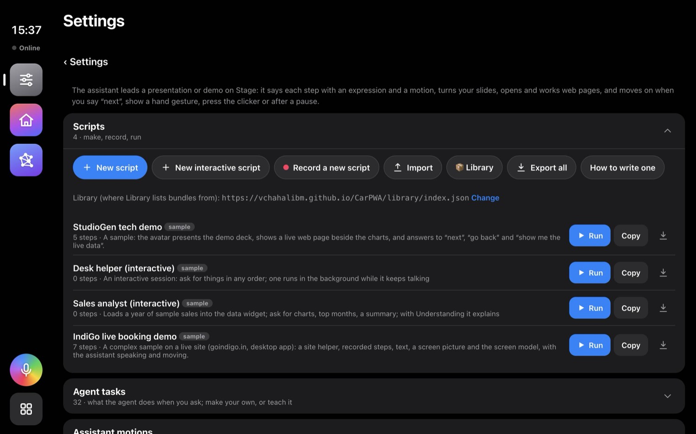
Agent tasks: the list
Settings › Scripts & tasks › Agent tasks: every task, grouped, with ▶ (run it and watch), the sliders (edit), and, for your own, delete (or Reset, for a built-in task you changed). At the top: New task (guided), Teach me and Blank task.
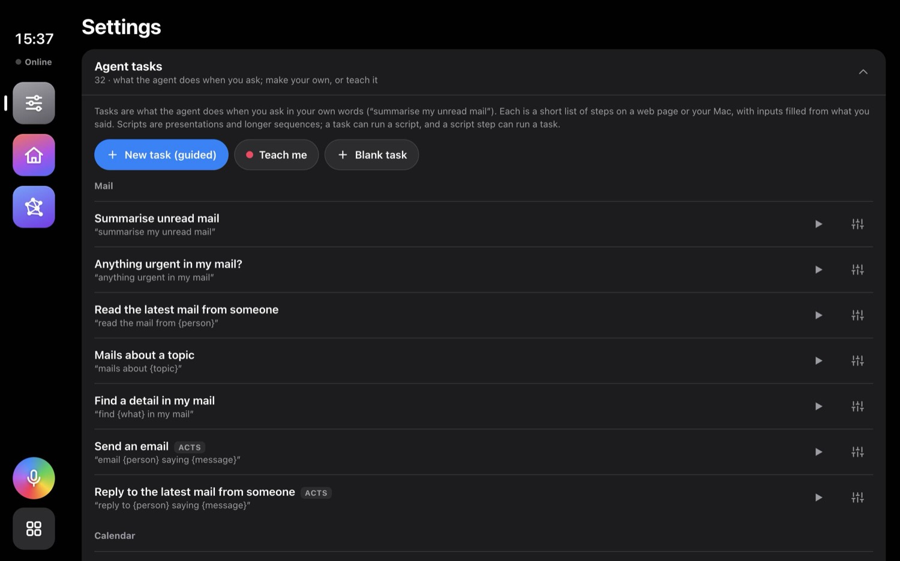
Teach me
- Teach me (or New task › “I'll show you”). Give it a name, the ways you'll ask (words in braces become inputs) and the address it starts at.
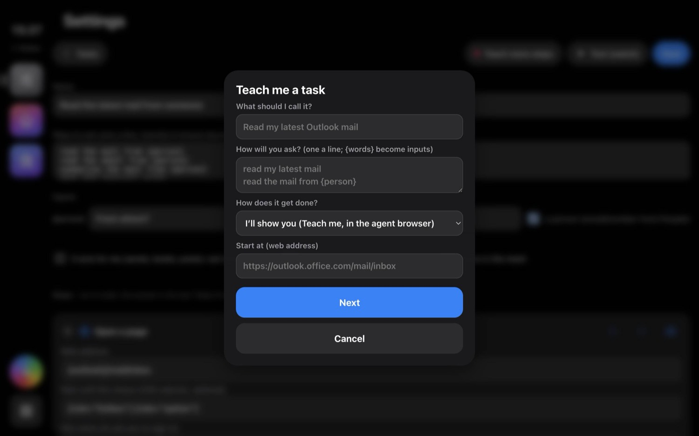
- The agent browser opens with a red Teaching bar. Sign in if the site asks (sign-ins are kept; passwords are never recorded). Then do the task once, the way you always do: click the search box, type, press Enter, open the first result…
- When the answer is on screen, tap Read this part and click the part to read: the message, the list, the table. It's outlined as you hover.
- Done. It asks what to tell you from what it read, and which words you typed change each time: tick them and name them (
search,person); they become inputs, asked for when you don't say them.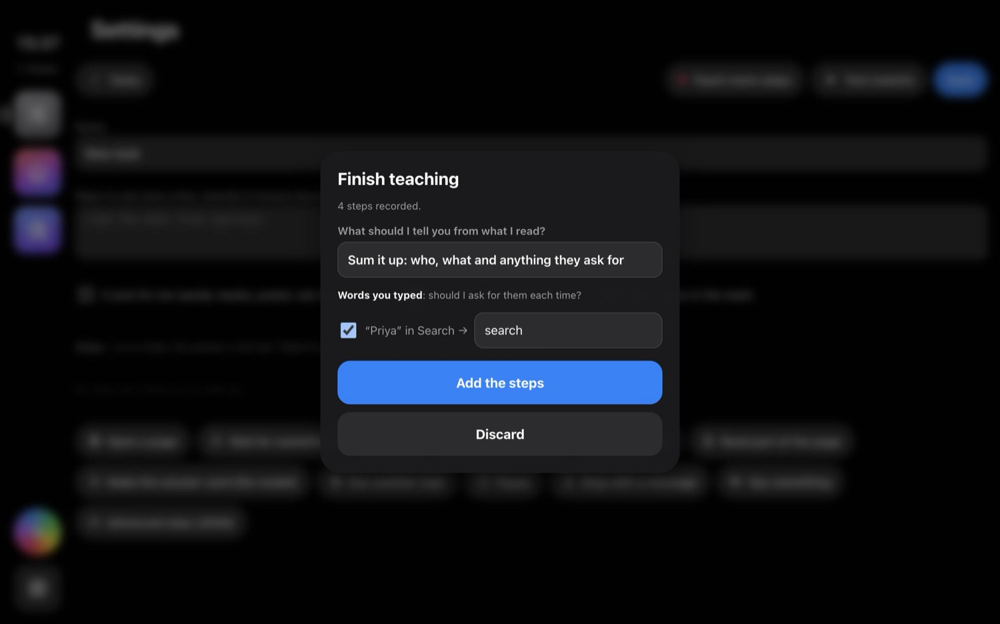
- The steps appear in the editor. Test (watch), fix what needs fixing, Save.
The editor and inputs
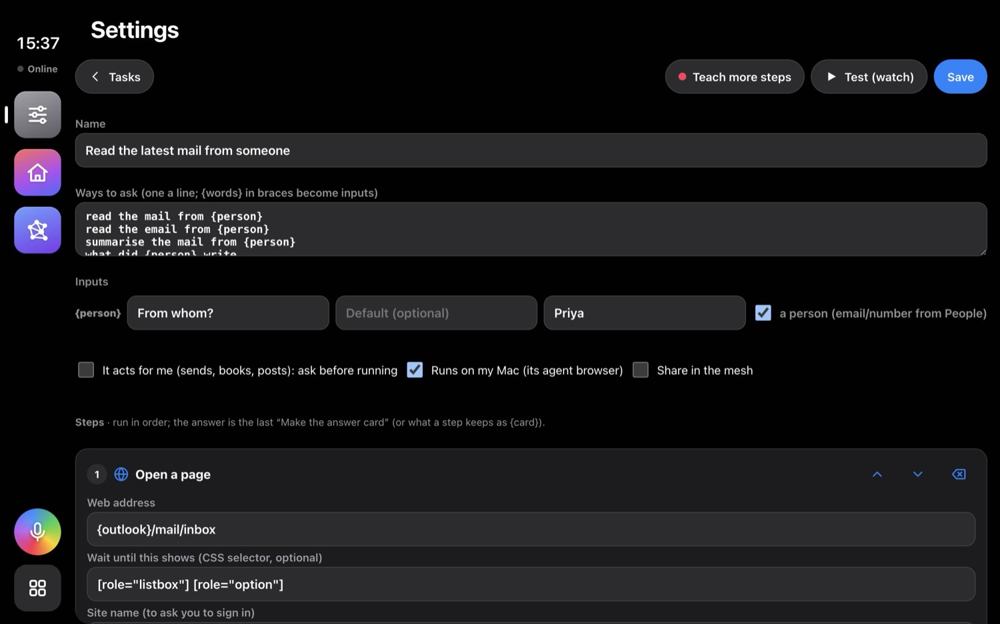
- Name and Ways to ask: one way a line.
{person}in a line becomes an input filled from what you say (read the mail from Priya
→ person = Priya). Several ways help it understand you; Apple's on-device model also matches by meaning. - Inputs: for each, the question when it's missing (
From whom?
), a default (used when it's not said), a test value (for Test), and “a person”, which looks up their email and number in People. - It acts for me: asked before every run (unless you trust it), with your Question before acting (inputs filled in). Runs on my Mac: uses the agent browser (a phone asks the Mac). Share in the mesh: your other devices can get it.
Task steps, one by one
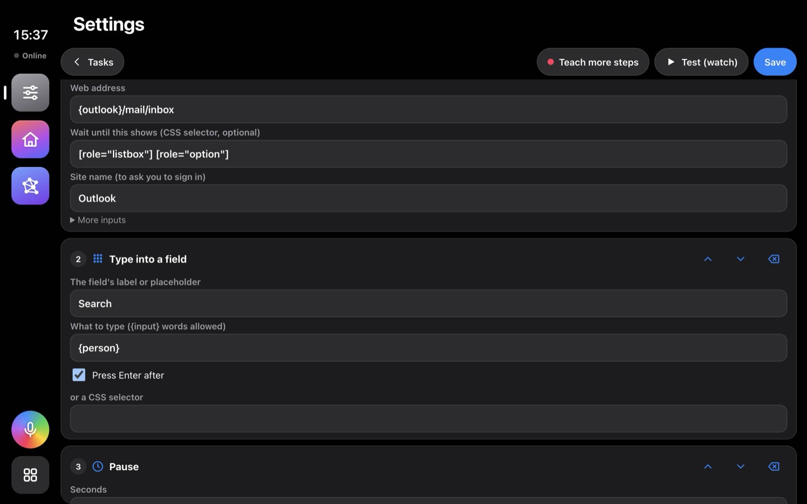
| Step | What it does | How to fill it | When to use it |
|---|---|---|---|
| Open a page | Loads an address in the agent browser and waits for it | The address (inputs allowed: https://site/orders/{order}); Wait until this shows: something that's there once the page is ready ([role="listbox"]); Site name, to ask you to sign in when a sign-in page appears; More inputs: ?q={topic} adds to the address | The first step of most tasks |
| Wait for something | Waits until an element or a text shows | A CSS selector, or a text; at most so many ms | After a click that loads something; slow pages |
| Click | Clicks an element | The text on it (Send), or a CSS selector (button[aria-label="Send"]); several choices with ||; optional in More inputs: carry on if it isn't there | Buttons, links, rows of a list |
| Type into a field | Focuses a field and types for real (works in rich editors like Teams, WhatsApp and Outlook's message box) | The field's label or placeholder (Search), what to type ({person}), Press Enter after; or a selector | Searches, replies, forms |
| Press a key | Enter, Escape, Tab… | The key; a field to focus first | Sending a chat message; closing a pop-up |
| Read part of the page | Reads text into {read} | What to read: selectors, tried in order, || between ([role="document"]||[role="main"]); the whole page if none fit. Each matching element is one line (a list gives one line per row) | Before every answer |
| Make the answer card | The model turns text into the card you see and hear: a headline and up to five items | What to tell you (“Sum up the unread emails: who and what they want”), from {read} (or any value) | The last step of reading tasks |
| Run another task | Runs a task, shows its card, keeps its result | The task; its inputs, one a line (person={next.items.0.person}) | Building bigger tasks from smaller ones |
| Pause | Waits some seconds | Seconds | Letting a page settle after a click |
| Stop with a message | Ends the task and says why | The message (No mail from {person}) | Inside an if, when something is missing |
| Say something | A spoken line | The line (inputs allowed) | Progress in long tasks |
| Advanced step (JSON) | Any script step: if, set, repeat, for each, any action | The step as JSON (see Logic and the recipes) | Repetition, conditions, gathering results |
Test, watch, fix
- Test (watch) in the editor (or ▶ in the list) opens a form with every input, filled with its test value; change any, then Run (watch). The values you ran with are kept for next time.
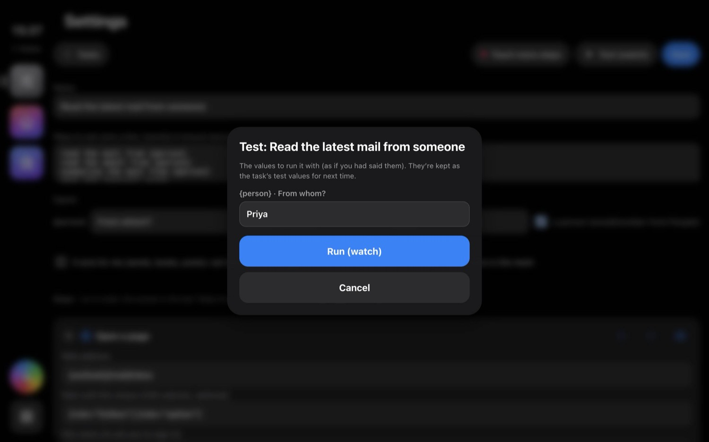
- The agent browser shows in a side panel: the page as the agent sees it, each step listed as it runs, ✓ with what it got (“208 characters read”) or ✗ with why, the element it clicks or types into ringed in red.
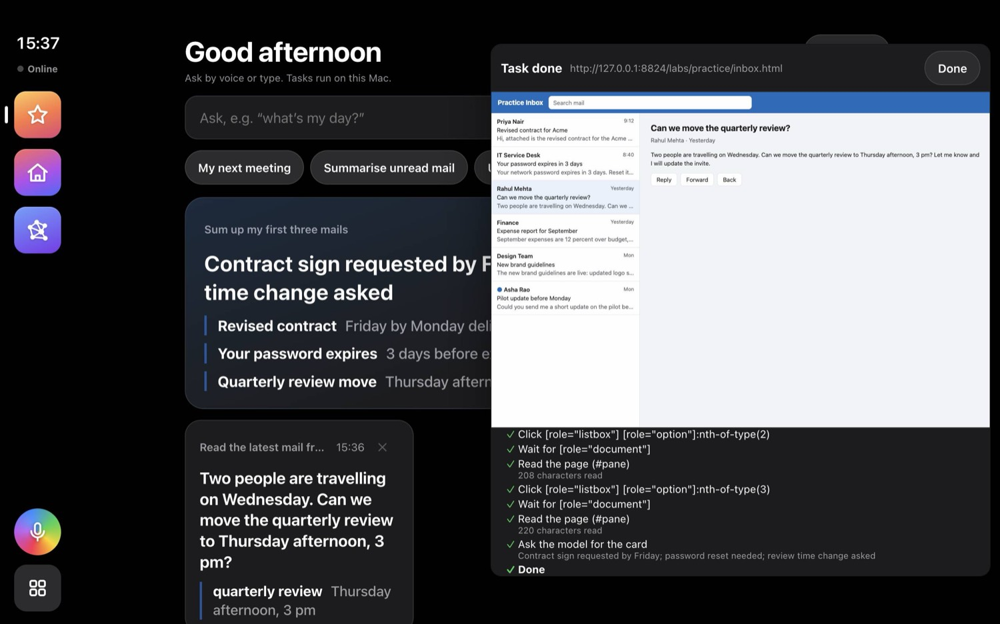
Watching the repetition recipe: three messages opened and read in turn, then summed up. - To go slower: Agent › Library › Settings › One step at a time pauses before each step: Next step, Run the rest, Stop the task. Show the browser while tasks run watches every run, not only tests.
- Fix the step marked ✗ in the editor (often a selector or a wait), test again, Save.
Acting for you, People, sharing
- Acting: a task marked “acts for me” (or that runs one that does) asks
Shall I …?
every time: Yes, Yes, always (trust it from now on), or No. Take trust back in Agent › Library. - People (Agent › Library › People): names with an email (mail, Teams) and a number with country code (WhatsApp). Inputs marked “a person” fill
{person_email}and{person_phone}from here. - Sharing: tick Share in the mesh; your other StudioGens see it in Mesh › Shared and can get a copy.
Finding things on a page
Every click, type, wait and read needs to find something on the page again, next time, when the page may look a little different. From most to least reliable:
| Way | Looks like | Use it for |
|---|---|---|
| A role | [role="listbox"], [role="option"], [role="document"], [role="main"] | The big parts of web apps (Outlook, Teams, Slack, WhatsApp use them): the message list, a row, the message, the main area |
| A label | button[aria-label="Send"], [aria-label="Message body"] | Buttons and areas named for screen readers; stable across languages less so |
| A test id | [data-testid="search"] | Pages that have them (your own pages: add them) |
| Its text | Click Send, type into Search | Buttons and fields with a fixed label |
| Its place | [role="option"]:nth-of-type(2) | “The second row”, whatever it says; loops over rows |
| Its id or path | #topSearchInput, main > div:nth-of-type(3) | Last resort: ids with long numbers and deep paths change when the site updates |
How to find one: Teach me records the best it can for each click and typing; Read this part picks an area and gives its selector; in the editor you can try another choice and Test. Several choices with || are tried in order, so button[aria-label="Send"]||button[title="Send"] works on both versions of a page. In scripts on Stage there are more ways: the words on screen, a picture of an area, a description for the screen model, or your own trained detector.
Recipe: repeat over items in a list tested
Goal: open the first three messages one after the other, read each, and sum them up together. When: anything that repeats over rows: messages, search results, orders, tickets.
- Open a page at the inbox, waiting for
[role="listbox"]. - Advanced step: start an empty collection:
{ "set": "all", "value": "" } - Advanced step: for each of 1, 2 and 3: click that row by its place, wait for the message, read it, add it to the collection:
{ "each": "1, 2, 3", "as": "n", "steps": [ { "do": "agent.click", "args": ["sel=[role=\"listbox\"] [role=\"option\"]:nth-of-type({n})"] }, { "do": "agent.wait", "value": "[role=\"document\"]", "args": ["ms=8000"] }, { "do": "agent.read", "value": "[role=\"document\"]||#pane", "as": "read" }, { "set": "all", "value": "{all}\n---\n{read}" } ] } - Make the answer card from
{all}: “These are three emails separated by ---. One item per email: title = sender and subject; detail = what they want.”
Variations: more rows: "each": "1, 2, 3, 4, 5". Only rows marked unread: read the list first (Read part of the page on [role="option"], one line per row) and let the card pick the unread ones, which needs no clicks at all. Over values you said: "each": "{people}" with … for Priya, Rahul
.
Result on the practice inbox: “Contract sign requested by Friday; password reset needed; review time change asked”, one item per mail (picture in Test, watch, fix).
Recipe: repeat until nothing is left tested
Goal: press “Load more” until it's gone, then read everything. When: pages that show a few results at a time.
{ "until": "{more} is false", "steps": [
{ "do": "agent.click", "value": "Load more", "args": ["optional"], "as": "more" },
{ "wait": 1500 }
] }
optional makes the click carry on when the button isn't there, and "as": "more" keeps whether it clicked; the loop stops the first time it didn't (and after 1000 rounds at most). The next steps (a read, the card) run once it's all loaded. For a fixed number of rounds use { "repeat": "5", "steps": [ … ] }.
Recipe: search, open the first result, read it tested
Goal: read the mail from Rahul
. When: anything that starts with a search.
- Open a page (inbox), wait for
[role="listbox"]. - Type into a field
Search, what to type{person}, Press Enter after. - Pause 1 s (the list redraws).
- Click selector
[role="listbox"] [role="option"](the first row). - Wait for
[role="document"], then Read[role="document"]. - Make the answer card: “Sum up this email: who wrote, what it is about and what they ask for.”
On the practice inbox, with person = Rahul: “Two people are travelling on Wednesday. Can we move the quarterly review to Thursday afternoon, 3 pm?”
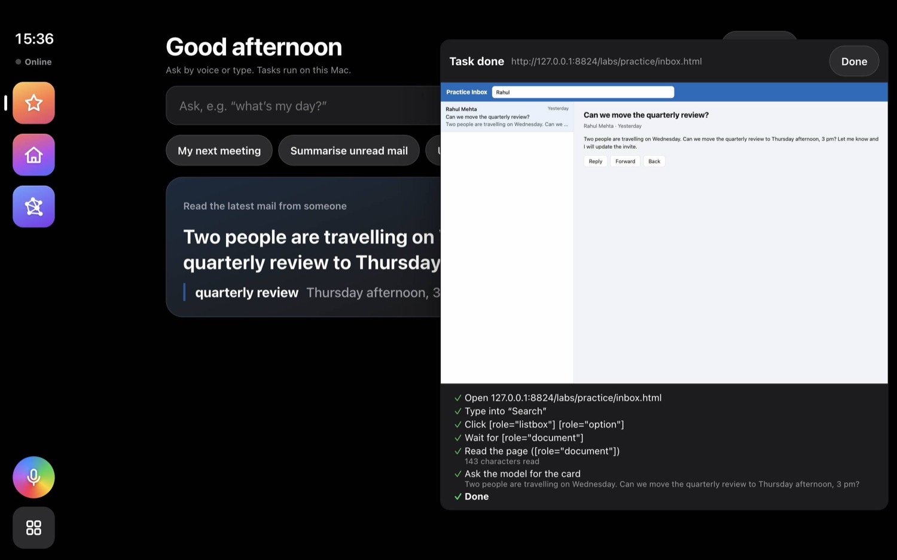
Recipe: stop when nothing is found tested
After a read, stop with a clear message instead of an empty card:
{ "if": "{read} is empty", "then": [ { "do": "agent.fail", "value": "There's no mail from {person}." } ] }
Or check what the page says (on the practice inbox a search for someone with no mail shows “No messages match”; the task then stops with “There is no mail from Zebedee.”): { "if": "{read} contains No messages match", "then": [ … ] }. Conditions can be joined: {count} > 0 and {read} contains invoice.
Recipe: slow pages, pop-ups and sign-ins
- Slow pages: give Open a page a Wait until this shows, and put a Wait for something after clicks that load content. Waiting for the thing you need beats a fixed pause: it goes on as soon as it's there.
- Pop-ups and banners: a Click on
CloseorAccept essentialwithoptional, so the task carries on when there's none; or a site helper that clicks it for every page. - Sign-ins: the Site name on Open a page makes a sign-in page stop the task with “Sign in to Outlook once in the agent browser”; sign in there once and it's kept.
- Robot checks (“unusual traffic”) stop the task and open the agent browser so you can answer them.
Recipe: elements whose text changes
Rows of a list, counters (Inbox (12)) and dates change every time. Find them by what doesn't change: the role and place ([role="option"]:nth-of-type(1)), a label ([aria-label^="Inbox"]: starts with), or the area around them. ^= starts with, *= contains, $= ends with.
Recipe: use one task's result in another
A task's card is kept with as, and its parts are reachable by dots: {next.headline}, {next.items.0.title}, {next.items.0.person}, {next.items.0.place}. The built-in Brief me for my next meeting does exactly this:
- Run another task My next meeting, kept as
next. - Advanced:
{ "if": "{next.items.0.person} is empty", "then": [ { "set": "card", "value": "{next}" } ], "else": [ … ] } - In the else: Run another task Read the latest mail from someone with
person={next.items.0.person}, kept asmail, then Make the answer card fromMeeting: {next} Latest mail: {mail}.
Recipe: send something, safely
- Tick It acts for me, and write the Question before acting with inputs in it:
send “{message}” to {person}becomesShall I send “running late” to Priya?
- For mail, open the compose page with the values in the address: Open a page
{outlook}/mail/deeplink/composewith More inputs?to={person_email},?subject={subject},?body={message}. - Click
Send(selectorbutton[aria-label="Send"]||button[title="Send"]). - Test on yourself first: put your own address in People.
Script recipes
A slideshow that loops until a gesture
Steps “Slide 1”…“Slide 5”, each moving on automatically after 8 s; the last jumps back to the first (Next › jump); a branch on the presenter's thumb up jumps to the talk. Good for a lobby screen that waits for the speaker.
Say every row of a table
{ "do": "data.csv", "value": "samples/sales.csv", "as": "rows" },
{ "each": "{rows}", "as": "row", "steps": [ { "say": "{row.month}: {row.revenue} in revenue." } ] }
A long job while the assistant keeps talking
An action with In the background on (an export, a report task), named; the next steps keep presenting; { "await": "export" } before the step that needs it; its then steps say “The export is done”.
Fetch something live in the middle of a talk
The action Run another task (What's my day?, Flight status) as a step: on Stage its card shows over the slides while the assistant reads it, and the talk carries on at the next step.
An interactive helper that runs tasks
An interactive script whose intents each run a task: show the mail from {person} → Run another task with person={person}; the assistant listens again after each.
Troubleshooting
| What you see | What to do |
|---|---|
| A step ✗ “Couldn't click…” / “No field…” | The selector or text no longer matches. Teach that part again (Teach more steps), or give two choices with ||. |
| “I couldn't read anything on that page” | The read found nothing: check What to read, add a Wait for something before it, or read [role="main"]. |
| The card has the wrong facts | Read a smaller area (only the message, not the whole page), and be specific in What to tell me. Watch it: the panel shows what was read. |
| “Sign in to … in the agent browser” | Agent › Library › Agent browser, sign in once, Done, run again. |
| It works when watched but not hidden | Pages behave the same (same size); usually it's timing: add a wait. |
| A script step doesn't find its element | Use “Its text on screen”, a picture of the area, or the screen model's description instead of the recorded element. |
| Something else | Settings › Logs (debug mode) shows each step; share the log. |